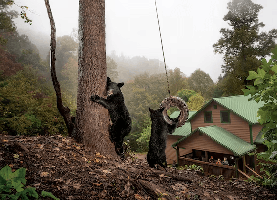
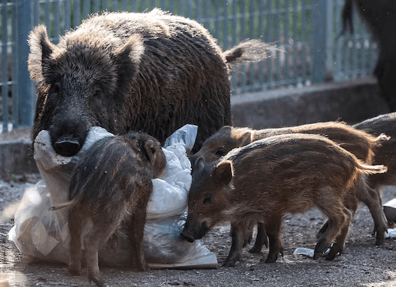

NATIONAL GEOGRAPHIC
These 6 U.S. Christmas markets feel like a fairy tale
TRAVEL
Europe, especially Germany, is rightly famed for its Christmas markets that bring a fairy tale sense of wonder to the season. But you don’t have to journey abroad for holiday magic—these fairs in the United States showcase European-style festivities while celebrating their cities’ cultural heritage.
Founded by Dutch immigrants in the 1840s roughly 30 miles from Grand Rapids, Holland is a pocket of the Netherlands in the U.S. The town even sports a wooden shoe factory. “The Dutch culture is alive and well in the community, featuring the Tulip Time festival in May and buildings like our working windmill that reflect the Dutch heritage,” says resident Kris Van Haitsma.
Holland’s Kerstmarkt (Dutch for Christmas market) has been a beloved annual tradition for 26 years. Wooden booths fill the 8th Street Marketplace downtown, offering goods from area producers. Look for handmade items from pens to brooms and wool socks from a sheep farm, says Van Haitsma, whose Mud Lake Farm whips up an elderberry chai soda just for the Kerstmarkt.
Along with finding one-of-a-kind gifts, you can sample Dutch delicacies like stroopwafels (caramel-filled waffle cookies); meet Sinterklaas, the Dutch Santa Claus; and listen to handbell concerts and carolers dressed in Dickens-era attire.
Arlington, Texas, knows all about the spirit of giving. The city “adopted” the Bavarian town of Bad Königshofen in 1951, sending much-needed supplies of food and clothing to refugees fleeing East Germany. A close relationship continues to this day; the sister cities each have a park named after the other.
That history inspired the annual Texas Christkindl Market, now in its 13th year. Arlington partners with another German town, Rothenburg ob der Tauber considered one of the most enchanting places in Bavaria to bring holiday magic and European charm to Texas. The event’s biggest vendor, Käthe Wohlfahrt, is also Germany’s largest Christmas goods company. Based in Rothenburg, it produces traditional German decorations, such as delicate glass ornaments, wooden toys, and nutcrackers. While browsing the wares, don’t miss a performance by the Swiss Longhorns, a famed quartet playing 12-foot-long alphorns.
The chief goal is authenticity, says Maria Murphy, the market’s CEO. “The Carmel Christkindlmarkt from its inception has always aimed to recreate the experience of visiting a market in a small town in Germany,” she says. That extends to the food. “One vendor flew to Germany just to bring back a specific kind of bread for his team to taste as they planned out the bread for their döner kebabs,” she adds.
Stop by the Werkstatt to watch renowned woodworkers and glassblowers from Germany at work. Kids can try their own crafts in the Kinderecke, while exhibits in the Kulturecke explore Indiana’s German-American history: The state was a major hub for German immigration in the 19th century. Notable Indianans of German descent include the writer Kurt Vonnegut.
Christmas Village, Baltimore, Maryland
Baltimore’s German heritage dates to its founding. German settlers already living on the Chesapeake Bay were among the city’s first residents when it was established in 1729. By the late 19th century, Baltimore was the second leading port of entry for European immigrants in the U.S., after New York City’s Ellis Island, and a quarter of Baltimoreans were either German-born or had German parents.
That heritage is celebrated at the annual Christmas Village, held in the heart of the Inner Harbor at West Shore Park. Warm up with a glass of hot mulled wine at the Glühwein Pyramid (custom-made by a German craftsman), then peruse the nearly 60 vendors. Be sure to sample the array of sausages at the Best of Wurst stall. Take a spin on the carousel or climb aboard the 65-foot Ferris wheel for views of the Inner Harbor and the lights twinkling across Charm City.
Comments :
- john Very good
- john Very good
Leave a Reply
Your email address will not be published. Required fields are marked*
Related posts:
-
Bears at Disney World Get used to it, experts say
Across North America, black bear numbers are rapidly expanding, reclaiming spaces where they haven’t been seen in more than a century. The roughly 4,000 bears in Florida, for instance, are surrounded by development
View article -
 'The perfect revenge' Birds are building fortresses from anti-bird spikes
'The perfect revenge' Birds are building fortresses from anti-bird spikes“They take the stuff we use to try to deter birds, and they make a nest out of it, and then make more birds,” says Auke-Florian Hiemstra, a biologist at Naturalis Biodiversity Center in the Netherlands and lead author of a study
View article -
Wild boars are wreaking havoc in Europe, spurring creative solutions
ROMEOn a cool night in late September, zoologist Andrea Monaco walks silently through the sandy shrublands of the Presidential Estate of Castelporziano, a protected area just outside of Rome, toward a family of trapped wild boars
View article